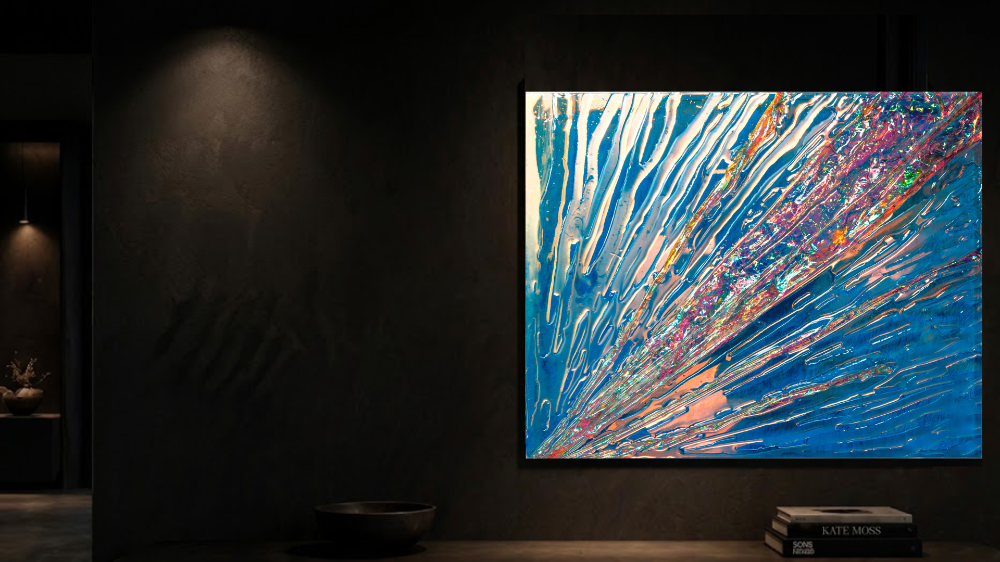
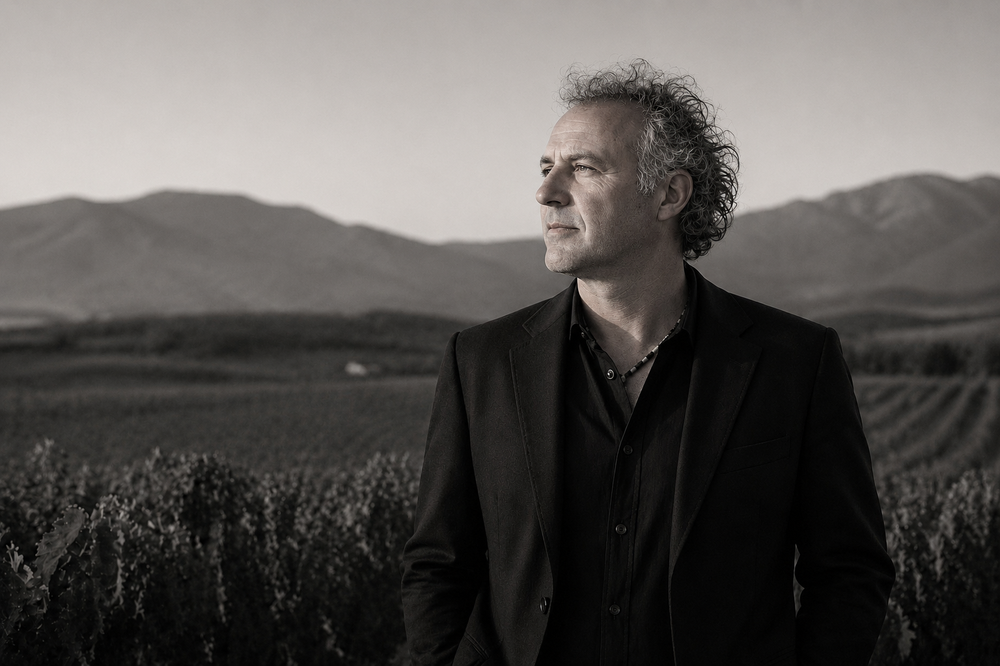
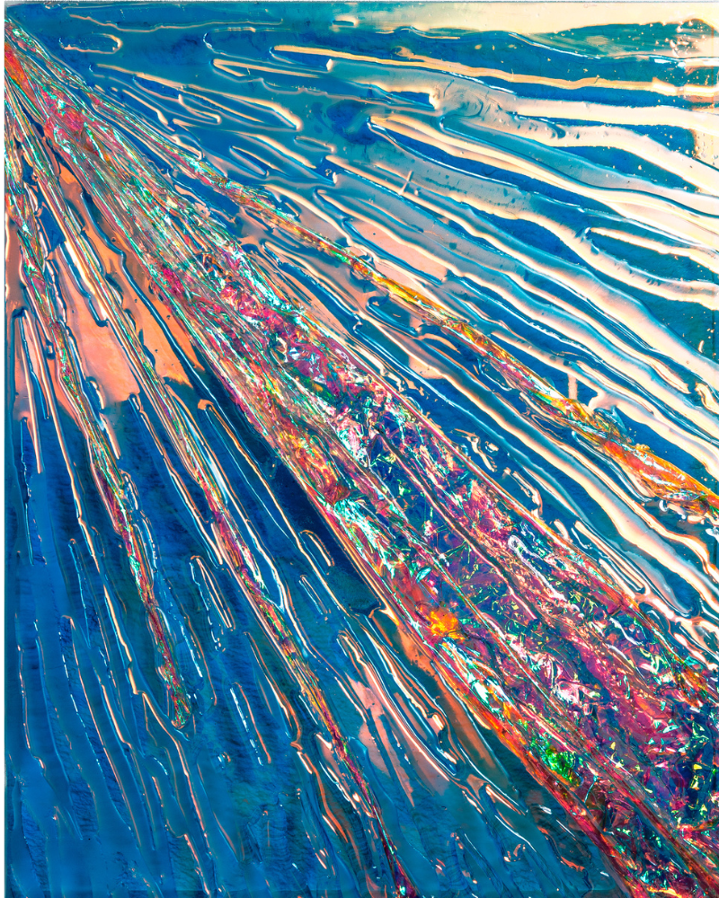

Cristóbal Peña y Lillo desarrolla una trayectoria marcada por la síntesis, la percepción y la búsqueda constante de nuevos lenguajes visuales. Nacido en Mendoza en 1972, complementó su formación con estudios en Harvard University...
Antes de consolidar plenamente su práctica artística, construyó una destacada carrera como director creativo durante más de 18 años. Su agencia fue reconocida entre las más creativas del interior del país, obteniendo premios y desarrollando campañas de alto impacto.
En paralelo, sostuvo una producción artística continua, realizando exposiciones y proyectos junto a marcas y espacios de alto nivel como Porsche y Bodega Trivento, además de colecciones privadas y presentaciones en distintos países.
A partir de 2022, la incorporación de resinas translúcidas redefinió su producción. La obra evolucionó hacia superficies minimalistas donde luz, profundidad y movimiento conviven en equilibrio. En esta etapa emerge con fuerza una inspiración constante: el mar, su energía, sus reflejos y su dimensión contemplativa.
Hoy su trabajo se reconoce por crear piezas vivas, capaces de transformarse con cada cambio de luz y de generar una experiencia estética sofisticada, silenciosa e hipnótica dentro del espacio.

Las obras de Cristóbal Peña y Lillo nacen de la luz como lenguaje y de la materia como vehículo sensible. Cada pieza activa reflejos, profundidad y movimiento visual, generando una experiencia cambiante a cada hora del día. La imagen respira, vibra y se transforma con el entorno.
La luz del amanecer, el sol pleno de la tarde o una noche serena revelan versiones distintas de una misma obra. Esa variación permanente crea una relación íntima con el tiempo, el agua y el horizonte. En sus superficies habita una memoria del mar: brillo, calma, profundidad, energía y fluidez.
En espacios minimalistas y arquitecturas contemporáneas encuentran una presencia natural. Aportan serenidad visual, sofisticación y un punto de contemplación para detenerse, observar y disfrutar cómo la luz recorre la pieza lentamente.
Realizadas a mano mediante un proceso minucioso con resinas translúcidas, alcanzan una apariencia líquida, pulida y profunda. La técnica se integra al gesto artístico para dar lugar a superficies vibrantes que capturan la atención desde el primer instante.
El espectador se aproxima, cambia de posición, descubre nuevos planos y participa de una interacción espontánea. La obra despierta curiosidad, invita a moverse y sostiene la mirada con elegancia.
Para el artista, la luz representa la máxima expresión tecnológica de la naturaleza: precisión, energía, movimiento y belleza en estado puro. Cada obra reúne esos elementos y los convierte en una presencia viva dentro del espacio.

50 x 70 cm